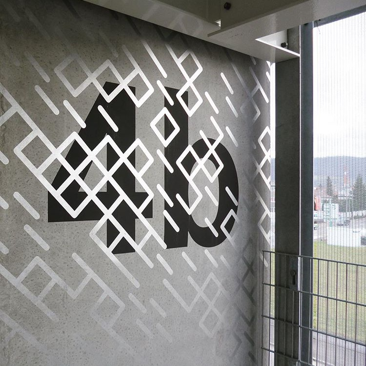

Week 7
Questions
- What kind of question do we ask to find out the pain points for students and faculty in the process of printing and using AV?
- What kind of instructions would prevent the users of printing and AV to not be able to fail?
- How can we ensure that all AV systems are set up so that users can use the system successfully by following the instructions?
- What do I want to do in the future? Is what I'm putting priority into right now aligned with that vision and goal?
Thoughts + Observations
- LA is uptopic. It's always sunny and beautiful.
- The Asian American experience here is one of acceptance and cultural/racial privilege.
- As an Asian American who grew up in the South who has always be acutely conscious of her "otherness", the comfort of being an East Asian in LA is surreal, to be on the other side of the privilege dynamic.
- The manner in which a person of a certain identity interacts with other individuals is reflected in the way an ethnic group of that same identity occupies a space in a diverse city.
Consumed content: Readings, videos, podcasts
Images + Methods

Pentagram: Sascha Lobe